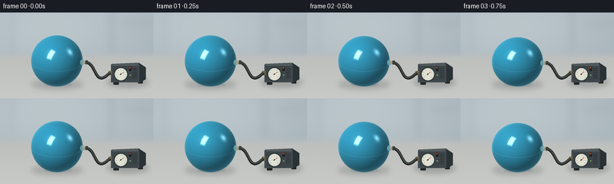
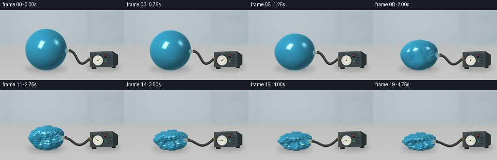

CODING AGENTS AS PIXEL WORLD MODELS
traex/GPT-6.1-Sol · phygen_018
点击播放 · 原生 RGB 像素
逐轮保存的候选
回放视频、检查图与代码变化。
每份候选均可单独播放。实际图片检查记录在下方工具轨迹中。
候选 01播放与检查图
点击播放 · 原生 RGB 像素


展开代码变化
--- 上一保存版本
+++ 本次保存版本
@@ -0,0 +1,230 @@
+from pathlib import Path
+import numpy as np
+from PIL import Image, ImageDraw, ImageFilter
+import artifact_io
+
+ROOT = Path(__file__).resolve().parent
+W,H,S = 256,144,3
+WW,HH=W*S,H*S
+R=43.0
+CX,GROUND=95.0,121.0
+E=np.deg2rad(24)
+VIEW=np.array([0,-np.cos(E),np.sin(E)])
+UP=np.array([0,np.sin(E),np.cos(E)])
+LIGHT=np.array([-.48,-.48,.79]); LIGHT/=np.linalg.norm(LIGHT)
+NT,NP=76,144
+th=np.linspace(0,np.pi,NT+1)
+ph=np.linspace(0,2*np.pi,NP,endpoint=False)
+T,P=np.meshgrid(th,ph,indexing='ij')
+D=np.stack([np.sin(T)*np.cos(P), np.sin(T)*np.sin(P),np.cos(T)],axis=-1)
+tri=[]
+for j in range(NT):
+ for k in range(NP):
+ a=j*NP+k; b=j*NP+(k+1)%NP; c=(j+1)*NP+k; d=(j+1)*NP+(k+1)%NP
+ tri.extend([(a,c,b),(b,c,d)])
+tri=np.asarray(tri)
+
+def smooth(a,b,x):
+ q=np.clip((x-a)/(b-a),0,1); return q*q*(3-2*q)
+
+def form(a):
+ # Atmospheric pressure creates broad inward dimples before the shell folds flat.
+ radial=np.ones_like(T)
+ radial-=a*.10
+ for v,depth,width in [((-.25,-.95,.25),.47,.19),((.67,-.62,.4),.34,.12),((-.65,.20,.60),.35,.14),((.1,.30,.95),.34,.17),((-.6,-.7,-.25),.24,.12)]:
+ v=np.array(v); v=v/np.linalg.norm(v)
+ radial-=depth*a*np.exp(-(1-np.sum(D*v,axis=-1))/width)
+ buckle=(.5+.5*np.cos(6*P+1.1*np.sin(2*T)))**3
+ radial-=.15*smooth(.15,.7,a)*buckle*np.sin(T)**2
+ wrinkles=smooth(.24,1,a)
+ radial+=wrinkles*(.040*np.sin(13*P+4*T)*np.sin(T)**2 + .018*np.sin(25*T+3*P)*np.sin(T))
+ radial=np.maximum(radial,.22)
+ pts=D*(R*radial)[...,None]
+ pts[...,0]*=1-.055*a
+ pts[...,1]*=1-.16*a
+ pts[...,2]*=1-.55*a
+ # Preserve the floor contact instead of floating as the volume disappears.
+ pts[...,2]-=pts[...,2].min()
+ pts[...,2]+=.45
+ dt=np.gradient(pts,axis=0)
+ dp=(np.roll(pts,-1,axis=1)-np.roll(pts,1,axis=1))/2
+ normals=np.cross(dt,dp)
+ normals/=np.maximum(np.linalg.norm(normals,axis=-1,keepdims=True),1e-9)
+ normals[0]=normals[1].mean(axis=0); normals[-1]=normals[-2].mean(axis=0)
+ normals/=np.maximum(np.linalg.norm(normals,axis=-1,keepdims=True),1e-9)
+ return pts,normals,radial
+
+def project(pts):
+ return np.stack([CX+pts[...,0],GROUND-np.sum(pts*UP,axis=-1)],axis=-1)
+
+def draw_path(draw,points,fill,width):
+ draw.line([(int(x*S),int(y*S)) for x,y in points],fill=fill,width=max(1,int(width*S)),joint='curve')
+
+def bezier(p0,p1,p2,p3,n=120):
+ t=np.linspace(0,1,n)[:,None]
+ return (1-t)**3*p0+3*(1-t)**2*t*p1+3*(1-t)*t*t*p2+t**3*p3
+
+def ellipse(draw,box,fill,outline=None,width=1):
+ draw.ellipse(tuple(int(v*S) for v in box), fill=fill,outline=outline,width=max(1,int(width*S)))
+def polygon(draw,p,fill):
+ draw.polygon([(int(x*S),int(y*S)) for x,y in p],fill=fill)
+def rect(draw,box,fill,radius=0):
+ b=tuple(int(v*S) for v in box)
+ if radius: draw.rounded_rectangle(b,radius=radius*S,fill=fill)
+ else: draw.rectangle(b,fill=fill)
+
+def background():
+ y,x=np.mgrid[0:HH,0:WW].astype(float); x/=S;y/=S
+ rng=np.random.default_rng(170)
+ floor=smooth(63,79,y)
+ light=np.exp(-((x-84)/170)**2-((y-23)/90)**2)
+ wall=np.stack([164+23*light,177+21*light,184+19*light],axis=-1)
+ desk=np.stack([191+.16*(y-85),193+.15*(y-85),191+.13*(y-85)],axis=-1)
+ rgb=wall*(1-floor[...,None])+desk*floor[...,None]
+ rgb+=rng.normal(0,.36,(HH,WW,1))
+ # Defocused laboratory wall, kept unobtrusive behind the object.
+ img=Image.fromarray(np.uint8(np.clip(rgb,0,255)))
+ bg=Image.new('RGBA',(WW,HH)); d=ImageDraw.Draw(bg)
+ rect(d,(183,0,188,65),(107,126,132,25))
+ rect(d,(205,17,252,19),(220,229,227,35))
+ rect(d,(19,0,21,65),(227,233,231,24))
+ bg=bg.filter(ImageFilter.GaussianBlur(6*S))
+ img=Image.alpha_composite(img.convert('RGBA'),bg).convert('RGB')
+ return img
+BASE=background()
+
+def scene(a,pts,valve):
+ img=BASE.copy()
+ # A soft contact shadow grounds both the plastic shell and the vacuum unit.
+ sh=Image.new('RGBA',(WW,HH)); d=ImageDraw.Draw(sh)
+ radius=43*(1-.17*a)
+ ellipse(d,(CX-radius,GROUND-9,CX+radius,GROUND+8),(43,53,57,48))
+ ellipse(d,(178,108,248,126),(37,43,44,56))
+ sh=sh.filter(ImageFilter.GaussianBlur(4.1*S))
+ img=Image.alpha_composite(img.convert('RGBA'),sh)
+ sh2=Image.new('RGBA',(WW,HH));d=ImageDraw.Draw(sh2)
+ ellipse(d,(CX-22,GROUND-3,CX+25,GROUND+3),(31,41,46,int(36+24*a)))
+ sh2=sh2.filter(ImageFilter.GaussianBlur(1.4*S))
+ img=Image.alpha_composite(img,sh2).convert('RGB')
+ d=ImageDraw.Draw(img)
+ # Compact vacuum pump, perspective front panel and analog negative-pressure gauge.
+ rect(d,(189,114,198,121),(35,39,40),1)
+ rect(d,(230,112,238,119),(35,39,40),1)
+ polygon(d,[(186,86),(231,84),(243,92),(198,95)],(82,91,92))
+ polygon(d,[(231,84),(243,92),(243,112),(232,118)],(42,50,53))
+ polygon(d,[(185,87),(232,87),(232,117),(185,117)],(65,74,78))
+ rect(d,(187,89,230,115),(61,69,72),2)
+ draw_path(d,[(188,88),(230,88)],(124,136,136),.7)
+ for y in [94,97,100,103,106,109]:
+ draw_path(d,[(221,y),(228,y)],(31,40,43),.7)
+ ellipse(d,(190,92,213,115),(27,32,33))
+ ellipse(d,(191,93,212,114),(174,183,178))
+ ellipse(d,(192,94,211,113),(224,225,210))
+ center=np.array([201.5,103.5])
+ for angle in np.linspace(-220,40,9):
+ v=np.array([np.cos(np.deg2rad(angle)),np.sin(np.deg2rad(angle))])
+ draw_path(d,[center+6.7*v,center+8.1*v],(60,68,66),.55)
+ angle=np.deg2rad(-35-174*a)
+ v=np.array([np.cos(angle),np.sin(angle)])
+ draw_path(d,[center-v*2,center+v*6.5],(155,42,31),.8)
+ ellipse(d,(200.4,102.4,202.6,104.6),(52,60,56))
+ # Small diffuse reflection on the gauge glass.
+ draw_path(d,[(195,98),(197,96),(204,96)],(244,245,232),.65)
+ rect(d,(215,91,219,98),(27,33,34),.6)
+ rect(d,(215.6,91.5,218.2,94),(149,66,45),.5)
+ ellipse(d,(216,104,218.2,106.2),(118,184,108))
+ # Brass pump inlet and a continuous sealed hose to the plastic valve.
+ rect(d,(181,98,187,105),(102,91,64),.7)
+ draw_path(d,[(182,99),(186,99)],(177,161,120),.6)
+ p0=valve+np.array([5.5,0])
+ p3=np.array([183.,101.5])
+ curve=bezier(p0,p0+np.array([19,2]),np.array([157,128]),p3)
+ draw_path(d,curve,(34,37,36),5.1)
+ draw_path(d,curve+np.array([0,-.7]),(60,66,65),2.5)
+ draw_path(d,curve+np.array([0,-1.4]),(123,130,124),.55)
+ return img
+
+def raster(pts,normals,radial):
+ proj=project(pts).reshape(-1,2)*S
+ depth=(pts@VIEW).reshape(-1)
+ # normal, UV z for the subtle molded equator seam, and concavity
+ attr=np.concatenate([normals,D[...,2,None],radial[...,None]],axis=-1).reshape(-1,5)
+ zbuf=np.full((HH,WW),-1e8,np.float32)
+ buf=np.zeros((HH,WW,5),np.float32)
+ for ids in tri:
+ xy=proj[ids]; zz=depth[ids]
+ lo=np.maximum(np.floor(xy.min(axis=0)).astype(int),[0,0]); hi=np.minimum(np.ceil(xy.max(axis=0)).astype(int),[WW-1,HH-1])
+ if np.any(hi<lo):continue
+ x0,y0=xy[0];x1,y1=xy[1];x2,y2=xy[2]
+ den=(y1-y2)*(x0-x2)+(x2-x1)*(y0-y2)
+ if abs(den)<1e-8:continue
+ xx,yy=np.meshgrid(np.arange(lo[0],hi[0]+1)+.5,np.arange(lo[1],hi[1]+1)+.5)
+ b0=((y1-y2)*(xx-x2)+(x2-x1)*(yy-y2))/den
+ b1=((y2-y0)*(xx-x2)+(x0-x2)*(yy-y2))/den
+ b2=1-b0-b1
+ z=b0*zz[0]+b1*zz[1]+b2*zz[2]
+ sl=np.s_[lo[1]:hi[1]+1,lo[0]:hi[0]+1]
+ good=(b0>=-1e-5)&(b1>=-1e-5)&(b2>=-1e-5)&(z>zbuf[sl])
+ if not np.any(good):continue
+ zbuf[sl][good]=z[good]
+ data=b0[...,None]*attr[ids[0]]+b1[...,None]*attr[ids[1]]+b2[...,None]*attr[ids[2]]
+ buf[sl][good]=data[good]
+ mask=zbuf>-1e7
+ n=buf[...,:3]; n/=np.maximum(np.linalg.norm(n,axis=-1,keepdims=True),1e-8)
+ nv=np.clip(n@VIEW,0,1)
+ nl=np.clip(n@LIGHT,0,1)
+ reflection=2*n*nv[...,None]-VIEW
+ h=LIGHT+VIEW; h/=np.linalg.norm(h)
+ spec=np.clip(n@h,0,1)**65
+ # Reflection of two large studio softboxes in a glossy thin plastic surface.
+ rv=np.array([-.45,-.5,.73]); rv/=np.linalg.norm(rv)
+ u=np.cross(rv,[0,0,1]);u/=np.linalg.norm(u)
+ v=np.cross(rv,u)
+ ru=reflection@u; rw=reflection@v; rr=reflection@rv
+ softbox=np.exp(-((ru/.21)**8+(rw/.36)**8))*smooth(.70,.93,rr)
+ rv2=np.array([.8,.0,.6]);rv2/=np.linalg.norm(rv2)
+ edge_light=np.clip(reflection@rv2,0,1)**45
+ ao=np.clip(.64+.45*buf[...,4],.61,1)
+ base=np.array([38.,135.,169.])
+ color=base*(.37+.65*nl[...,None])*ao[...,None]
+ # Broad gradients, faint pearlescent translucency and contrasting folded regions.
+ color+=np.array([17,29,33])*(nv[...,None]**.45)
+ fres=(1-nv)**3
+ color+=fres[...,None]*np.array([59,79,82])
+ color+=softbox[...,None]*np.array([132,126,108])
+ color+=spec[...,None]*np.array([29,26,20])
+ color+=edge_light[...,None]*np.array([98,110,111])
+ seam=np.exp(-(buf[...,3]/.011)**2)
+ color=color*(1-.08*seam[...,None])+np.array([18,29,30])*seam[...,None]
+ rng=np.random.default_rng(8)
+ color+=rng.normal(0,.50,(HH,WW,1))
+ return mask,np.uint8(np.clip(color,0,255))
+
+def frame(k):
+ t=k/19
+ a=float(smooth(.035,.96,t))
+ pts,normals,radial=form(a)
+ # A small integral airtight outlet at the right equator stays attached throughout.
+ ti=NT//2; pi=NP-3
+ valve=project(pts[ti,pi])
+ img=scene(a,pts,valve)
+ mask,col=raster(pts,normals,radial)
+ out=np.array(img);out[mask]=col[mask]
+ img=Image.fromarray(out);d=ImageDraw.Draw(img)
+ x,y=valve
+ # Transparent plastic reinforcing collar, cream connector, ribbed hose lock.
+ ellipse(d,(x-3.7,y-4.5,x+3.6,y+4.5),(89,157,174),(160,200,207),.55)
+ polygon(d,[(x,y-3),(x+7,y-2.6),(x+7,y+2.8),(x,y+3.2)],(156,156,133))
+ draw_path(d,[(x+.5,y-2.5),(x+6.6,y-2.2)],(221,223,197),.8)
+ rect(d,(x+5,y-3.1,x+9,y+3.1),(43,48,45),.6)
+ for dx in [5.5,6.8,8.1]:
+ draw_path(d,[(x+dx,y-2.6),(x+dx,y+2.6)],(101,108,99),.55)
+ return np.array(img.resize((W,H),Image.Resampling.LANCZOS).convert('RGB'))
+
+if __name__=='__main__':
+ frames=[]
+ for i in range(20):
+ frames.append(frame(i))
+ print(f'Rendered {i+1}/20',flush=True)
+ artifact_io.save(np.stack(frames).astype(np.uint8),ROOT)
+ print('Saved RGB video artifacts.',flush=True)
可观测工具轨迹
实际执行的命令与返回图片。
命令 1exit 0
/bin/bash -lc "ls -la && cat prompt.txt && printf '\\n--- RULES ---\\n' && cat GENERATION_RULES.md && printf '\\n--- SPEC ---\\n' && cat task_spec.json"
命令 2exit 0
/bin/bash -lc "cat artifact_io.py && python - <<'PY' import importlib.util for x in ['numpy','PIL','scipy']: print(x, importlib.util.find_spec(x)) PY"
命令 3exit 0
/bin/bash -lc "cat > generate.py <<'PY'
from pathlib import Path
import numpy as np
from PIL import Image, ImageDraw, ImageFilter
import artifact_io
ROOT = Path(__file__).resolve().parent
W,H,S = 256,144,3
WW,HH=W*S,H*S
R=43.0
CX,GROUND=95.0,121.0
E=np.deg2rad(24)
VIEW=np.array([0,-np.cos(E),np.sin(E)])
UP=np.array([0,np.sin(E),np.cos(E)])
LIGHT=np.array([-.48,-.48,.79]); LIGHT/=np.linalg.norm(LIGHT)
NT,NP=76,144
th=np.linspace(0,np.pi,NT+1)
ph=np.linspace(0,2*np.pi,NP,endpoint=False)
T,P=np.meshgrid(th,ph,indexing='ij')
D=np.stack([np.sin(T)*np.cos(P), np.sin(T)*np.sin(P),np.cos(T)],axis=-1)
tri=[]
for j in range(NT):
for k in range(NP):
a=j*NP+k; b=j*NP+(k+1)%NP; c=(j+1)*NP+k; d=(j+1)*NP+(k+1)%NP
tri.extend([(a,c,b),(b,c,d)])
tri=np.asarray(tri)
def smooth(a,b,x):
q=np.clip((x-a)/(b-a),0,1); return q*q*(3-2*q)
def form(a):
# Atmospheric pressure creates broad inward dimples before the shell folds flat.
radial=np.ones_like(T)
radial-=a*.10
for v,depth,width in [((-.25,-.95,.25),.47,.19),((.67,-.62,.4),.34,.12),((-.65,.20,.60),.35,.14),((.1,.30,.95),.34,.17),((-.6,-.7,-.25),.24,.12)]:
v=np.array(v); v=v/np.linalg.norm(v)
radial-=depth*a*np.exp(-(1-np.sum(D*v,axis=-1))/width)
buckle=(.5+.5*np.cos(6*P+1.1*np.sin(2*T)))**3
radial-=.15*smooth(.15,.7,a)*buckle*np.sin(T)**2
wrinkles=smooth(.24,1,a)
radial+=wrinkles*(.040*np.sin(13*P+4*T)*np.sin(T)**2 + .018*np.sin(25*T+3*P)*np.sin(T))
radial=np.maximum(radial,.22)
pts=D*(R*radial)[...,None]
pts[...,0]*=1-.055*a
pts[...,1]*=1-.16*a
pts[...,2]*=1-.55*a
# Preserve the floor contact instead of floating as the volume disappears.
pts[...,2]-=pts[...,2].min()
pts[...,2]+=.45
dt=np.gradient(pts,axis=0)
dp=(np.roll(pts,-1,axis=1)-np.roll(pts,1,axis=1))/2
normals=np.cross(dt,dp)
normals/=np.maximum(np.linalg.norm(normals,axis=-1,keepdims=True),1e-9)
normals[0]=normals[1].mean(axis=0); normals[-1]=normals[-2].mean(axis=0)
normals/=np.maximum(np.linalg.norm(normals,axis=-1,keepdims=True),1e-9)
return pts,normals,radial
def project(pts):
return np.stack([CX+pts[...,0],GROUND-np.sum(pts*UP,axis=-1)],axis=-1)
def draw_path(draw,points,fill,width):
draw.line([(int(x*S),int(y*S)) for x,y in points],fill=fill,width=max(1,int(width*S)),joint='curve')
def bezier(p0,p1,p2,p3,n=120):
t=np.linspace(0,1,n)[:,None]
return (1-t)**3*p0+3*(1-t)**2*t*p1+3*(1-t)*t*t*p2+t**3*p3
def ellipse(draw,box,fill,outline=None,width=1):
draw.ellipse(tuple(int(v*S) for v in box), fill=fill,outline=outline,width=max(1,int(width*S)))
def polygon(draw,p,fill):
draw.polygon([(int(x*S),int(y*S)) for x,y in p],fill=fill)
def rect(draw,box,fill,radius=0):
b=tuple(int(v*S) for v in box)
if radius: draw.rounded_rectangle(b,radius=radius*S,fill=fill)
else: draw.rectangle(b,fill=fill)
def background():
y,x=np.mgrid[0:HH,0:WW].astype(float); x/=S;y/=S
rng=np.random.default_rng(170)
floor=smooth(63,79,y)
light=np.exp(-((x-84)/170)**2-((y-23)/90)**2)
wall=np.stack([164+23*light,177+21*light,184+19*light],axis=-1)
desk=np.stack([191+.16*(y-85),193+.15*(y-85),191+.13*(y-85)],axis=-1)
rgb=wall*(1-floor[...,None])+desk*floor[...,None]
rgb+=rng.normal(0,.36,(HH,WW,1))
# Defocused laboratory wall, kept unobtrusive behind the object.
img=Image.fromarray(np.uint8(np.clip(rgb,0,255)))
bg=Image.new('RGBA',(WW,HH)); d=ImageDraw.Draw(bg)
rect(d,(183,0,188,65),(107,126,132,25))
rect(d,(205,17,252,19),(220,229,227,35))
rect(d,(19,0,21,65),(227,233,231,24))
bg=bg.filter(ImageFilter.GaussianBlur(6*S))
img=Image.alpha_composite(img.convert('RGBA'),bg).convert('RGB')
return img
BASE=background()
def scene(a,pts,valve):
img=BASE.copy()
# A soft contact shadow grounds both the plastic shell and the vacuum unit.
sh=Image.new('RGBA',(WW,HH)); d=ImageDraw.Draw(sh)
radius=43*(1-.17*a)
ellipse(d,(CX-radius,GROUND-9,CX+radius,GROUND+8),(43,53,57,48))
ellipse(d,(178,108,248,126),(37,43,44,56))
sh=sh.filter(ImageFilter.GaussianBlur(4.1*S))
img=Image.alpha_composite(img.convert('RGBA'),sh)
sh2=Image.new('RGBA',(WW,HH));d=ImageDraw.Draw(sh2)
ellipse(d,(CX-22,GROUND-3,CX+25,GROUND+3),(31,41,46,int(36+24*a)))
sh2=sh2.filter(ImageFilter.GaussianBlur(1.4*S))
img=Image.alpha_composite(img,sh2).convert('RGB')
d=ImageDraw.Draw(img)
# Compact vacuum pump, perspective front panel and analog negative-pressure gauge.
rect(d,(189,114,198,121),(35,39,40),1)
rect(d,(230,112,238,119),(35,39,40),1)
polygon(d,[(186,86),(231,84),(243,92),(198,95)],(82,91,92))
polygon(d,[(231,84),(243,92),(243,112),(232,118)],(42,50,53))
polygon(d,[(185,87),(232,87),(232,117),(185,117)],(65,74,78))
rect(d,(187,89,230,115),(61,69,72),2)
draw_path(d,[(188,88),(230,88)],(124,136,136),.7)
for y in [94,97,100,103,106,109]:
draw_path(d,[(221,y),(228,y)],(31,40,43),.7)
ellipse(d,(190,92,213,115),(27,32,33))
ellipse(d,(191,93,212,114),(174,183,178))
ellipse(d,(192,94,211,113),(224,225,210))
center=np.array([201.5,103.5])
for angle in np.linspace(-220,40,9):
v=np.array([np.cos(np.deg2rad(angle)),np.sin(np.deg2rad(angle))])
draw_path(d,[center+6.7*v,center+8.1*v],(60,68,66),.55)
angle=np.deg2rad(-35-174*a)
v=np.array([np.cos(angle),np.sin(angle)])
draw_path(d,[center-v*2,center+v*6.5],(155,42,31),.8)
ellipse(d,(200.4,102.4,202.6,104.6),(52,60,56))
# Small diffuse reflection on the gauge glass.
draw_path(d,[(195,98),(197,96),(204,96)],(244,245,232),.65)
rect(d,(215,91,219,98),(27,33,34),.6)
rect(d,(215.6,91.5,218.2,94),(149,66,45),.5)
ellipse(d,(216,104,218.2,106.2),(118,184,108))
# Brass pump inlet and a continuous sealed hose to the plastic valve.
rect(d,(181,98,187,105),(102,91,64),.7)
draw_path(d,[(182,99),(186,99)],(177,161,120),.6)
p0=valve+np.array([5.5,0])
p3=np.array([183.,101.5])
curve=bezier(p0,p0+np.array([19,2]),np.array([157,128]),p3)
draw_path(d,curve,(34,37,36),5.1)
draw_path(d,curve+np.array([0,-.7]),(60,66,65),2.5)
draw_path(d,curve+np.array([0,-1.4]),(123,130,124),.55)
return img
def raster(pts,normals,radial):
proj=project(pts).reshape(-1,2)*S
depth=(pts@VIEW).reshape(-1)
# normal, UV z for the subtle molded equator seam, and concavity
attr=np.concatenate([normals,D[...,2,None],radial[...,None]],axis=-1).reshape(-1,5)
zbuf=np.full((HH,WW),-1e8,np.float32)
buf=np.zeros((HH,WW,5),np.float32)
for ids in tri:
xy=proj[ids]; zz=depth[ids]
lo=np.maximum(np.floor(xy.min(axis=0)).astype(int),[0,0]); hi=np.minimum(np.ceil(xy.max(axis=0)).astype(int),[WW-1,HH-1])
if np.any(hi<lo):continue
x0,y0=xy[0];x1,y1=xy[1];x2,y2=xy[2]
den=(y1-y2)*(x0-x2)+(x2-x1)*(y0-y2)
if abs(den)<1e-8:continue
xx,yy=np.meshgrid(np.arange(lo[0],hi[0]+1)+.5,np.arange(lo[1],hi[1]+1)+.5)
b0=((y1-y2)*(xx-x2)+(x2-x1)*(yy-y2))/den
b1=((y2-y0)*(xx-x2)+(x0-x2)*(yy-y2))/den
b2=1-b0-b1
z=b0*zz[0]+b1*zz[1]+b2*zz[2]
sl=np.s_[lo[1]:hi[1]+1,lo[0]:hi[0]+1]
good=(b0>=-1e-5)&(b1>=-1e-5)&(b2>=-1e-5)&(z>zbuf[sl])
if not np.any(good):continue
zbuf[sl][good]=z[good]
data=b0[...,None]*attr[ids[0]]+b1[...,None]*attr[ids[1]]+b2[...,None]*attr[ids[2]]
buf[sl][good]=data[good]
mask=zbuf>-1e7
n=buf[...,:3]; n/=np.maximum(np.linalg.norm(n,axis=-1,keepdims=True),1e-8)
nv=np.clip(n@VIEW,0,1)
nl=np.clip(n@LIGHT,0,1)
reflection=2*n*nv[...,None]-VIEW
h=LIGHT+VIEW; h/=np.linalg.norm(h)
spec=np.clip(n@h,0,1)**65
# Reflection of two large studio softboxes in a glossy thin plastic surface.
rv=np.array([-.45,-.5,.73]); rv/=np.linalg.norm(rv)
u=np.cross(rv,[0,0,1]);u/=np.linalg.norm(u)
v=np.cross(rv,u)
ru=reflection@u; rw=reflection@v; rr=reflection@rv
softbox=np.exp(-((ru/.21)**8+(rw/.36)**8))*smooth(.70,.93,rr)
rv2=np.array([.8,.0,.6]);rv2/=np.linalg.norm(rv2)
edge_light=np.clip(reflection@rv2,0,1)**45
ao=np.clip(.64+.45*buf[...,4],.61,1)
base=np.array([38.,135.,169.])
color=base*(.37+.65*nl[...,None])*ao[...,None]
# Broad gradients, faint pearlescent translucency and contrasting folded regions.
color+=np.array([17,29,33])*(nv[...,None]**.45)
fres=(1-nv)**3
color+=fres[...,None]*np.array([59,79,82])
color+=softbox[...,None]*np.array([132,126,108])
color+=spec[...,None]*np.array([29,26,20])
color+=edge_light[...,None]*np.array([98,110,111])
seam=np.exp(-(buf[...,3]/.011)**2)
color=color*(1-.08*seam[...,None])+np.array([18,29,30])*seam[...,None]
rng=np.random.default_rng(8)
color+=rng.normal(0,.50,(HH,WW,1))
return mask,np.uint8(np.clip(color,0,255))
def frame(k):
t=k/19
a=float(smooth(.035,.96,t))
pts,normals,radial=form(a)
# A small integral airtight outlet at the right equator stays attached throughout.
ti=NT//2; pi=NP-3
valve=project(pts[ti,pi])
img=scene(a,pts,valve)
mask,col=raster(pts,normals,radial)
out=np.array(img);out[mask]=col[mask]
img=Image.fromarray(out);d=ImageDraw.Draw(img)
x,y=valve
# Transparent plastic reinforcing collar, cream connector, ribbed hose lock.
ellipse(d,(x-3.7,y-4.5,x+3.6,y+4.5),(89,157,174),(160,200,207),.55)
polygon(d,[(x,y-3),(x+7,y-2.6),(x+7,y+2.8),(x,y+3.2)],(156,156,133))
draw_path(d,[(x+.5,y-2.5),(x+6.6,y-2.2)],(221,223,197),.8)
rect(d,(x+5,y-3.1,x+9,y+3.1),(43,48,45),.6)
for dx in [5.5,6.8,8.1]:
draw_path(d,[(x+dx,y-2.6),(x+dx,y+2.6)],(101,108,99),.55)
return np.array(img.resize((W,H),Image.Resampling.LANCZOS).convert('RGB'))
if __name__=='__main__':
frames=[]
for i in range(20):
frames.append(frame(i))
print(f'Rendered {i+1}/20',flush=True)
artifact_io.save(np.stack(frames).astype(np.uint8),ROOT)
print('Saved RGB video artifacts.',flush=True)
PY
python generate.py"命令 4exit 0
/bin/bash -lc "python - <<'PY'
from pathlib import Path
import numpy as np
p=Path('.')
a=np.load('pixels.npz')['pixels']
assert a.shape==(144,256,20)
assert len(list((p/'frames').glob('*.png')))==20
for name in ['generate.py','index.html','pixels.npz','inspection.png']:
print(name, (p/name).stat().st_size)
PY"视觉工具实际返回图片 1

保存候选 1 份；完成命令 4 次；可验证图片返回 1 张。原始 API 响应与完整日志保留在本地。